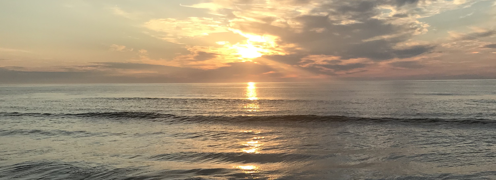
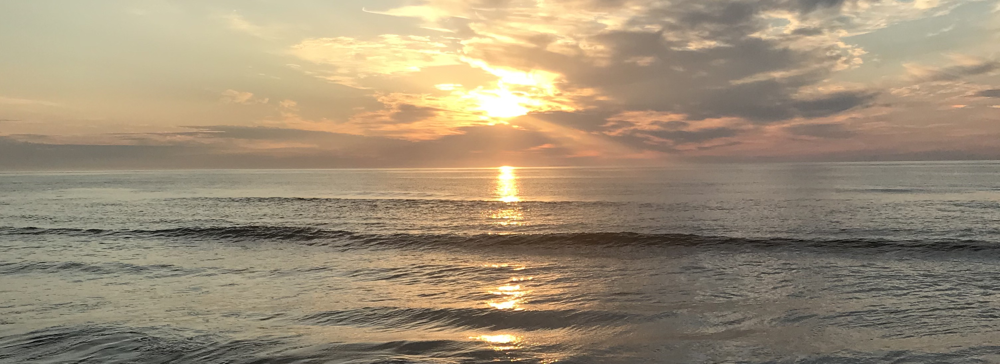

From Sandy Hook all the way down to Cape May, New Jersey has one of the most beautiful coasts in the United States.
We'll guide you to the best beaches, restaurants, and activites located right along the Atlantic Ocean.

We'll guide you to the best beaches, restaurants, and activites located right along the Atlantic Ocean.
Point Pleasant, Lavallette, and Seaside Hights
The beaches along the east coast of New Jersey have so much to offer. Every summer, these beaches host thousands of vacationers and tourists, offering them amazing cuisine, fun activites, and beautiful weather.
 
